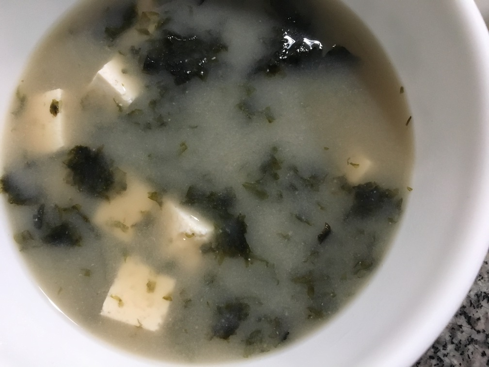

| Other | Meat | Veggie | Fruit |
|---|---|---|---|
| dashi | tofu | green onions | |
| miso | any | seaweed paper | |
| any |
| instructions |
|---|
| Boil 4 cups water & 2 tsp of dashi granules |
| Hydrate seaweed paper in warm water |
| Reduce heat to medium and add meats/veggies & seaweed |
| Remove from heat and mix in 3 tbsp of blended miso |
| Garnish with green onions |